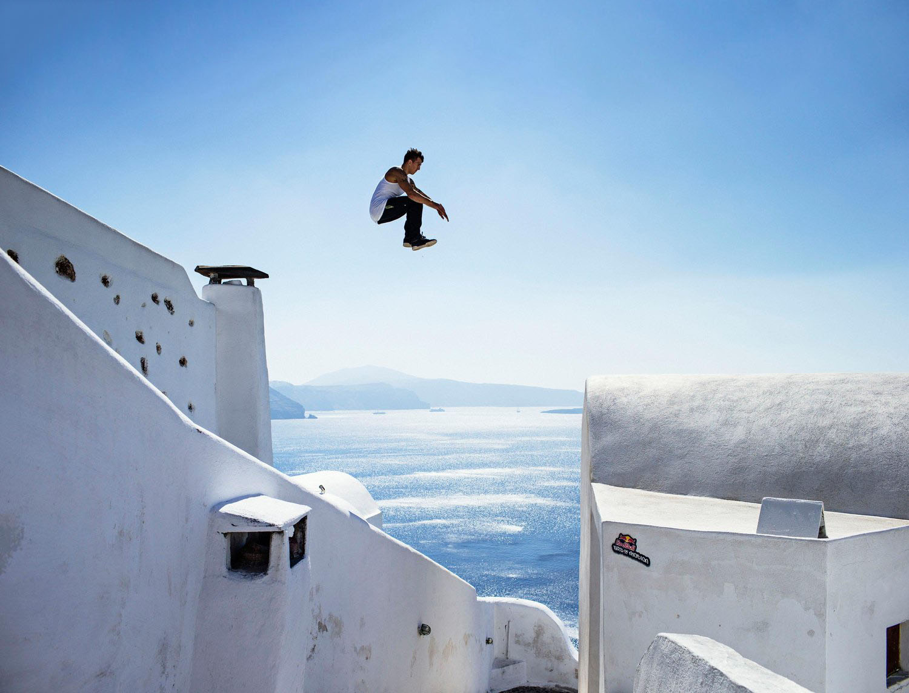

EL ARTE EN SU EXPRESION FISICA
Conocemos como “arte” una expresión estética, pero al mismo tiempo es un elemento importante de la cultura, subjetivo por el observador al que es sometido.
¿Es el Parkour una expresión cultural sin arte o simplemente es un arte independiente a la percepción del ser culto?
Pero así podemos quedar vacíos de todas la cosas “malas” que provocan un desorden en nosotros; la música o la pintura tienen la capacidad de devolver al individuo un estado de equilibrio armónico, y ambos son considerados como un tipo
de arte. El Parkour, independiente de todos los aspectos físicos, enseña a encontrar ese “balance” de nuevo. Son tantos los factores que intervienen en la practica de esta disciplina que resultaría complicado citar todos. Cada uno tiene la capacidad de provocar en el practicante diferentes sensaciones que pueden derivar en lo mismo, asimilando así, un desenlace cognitivo similar al de una pieza musical. Conocido también como “el arte del desplazamiento” resulta interesante analizar dicha disciplina desde un punto de vista filosófico, es decir, más allá del simple movimiento.

LA EFICIENCIA, NUESTRO OBJETIVO
Originalmente desarrollado sobre la eficacia y la simplicidad, el Parkour ha adoptado muchos “aspectos” completamente diferentes o contrarios a la idea original, creciendo junto con el número de nuevos practicantes y por consecuencia dando la oportunidad de interpretar la disciplina de muchas maneras que se alejan del origen.
El origen es el arte, el arte es la esencia, y la esencia del Parkour es “salvaje”. Ese ente incorpóreo con el que se topa cada nuevo practicante, ansioso por explorar el nuevo mundo que acaba de descubrir. A medida que se crece, los valores dentro de esta disciplina se vuelven más fuertes, y junto con ellos los
individuos, notando que el Parkour no sólo tiene movimientos nuevos por ofrecer, pasando de ser un deporte para transformarse en una forma de vida.
Lo que encontramos hoy son saltos arriesgados que exponen la integridad del practicante, sólo para lograr mayores “vistas” en su nuevo video; no son más que intentos para “comercializar” el Parkour. Por tener reglas, otros deportes no corren el riesgo de ser “desvirtuados”, pues en el Parkour la interpretación individual es lo que puede encaminar al individuo a la superación o la competencia.
CONSEJOS PARA INTRODUCIRNOS EN EL PARKOUR
1.- Ponte en forma:
De primeras, se recomienda realizar una serie de ejercicios básicos para preparar nuestro cuerpo como son las sentadillas, dominadas o abdominales.
2.- Rodar y aterrizar:
Dado que vas a saltar obstáculos resulta necesario practicar el aterrizaje para no hacerte ningún tipo de daño.
3.- Constancia:
Una media de 2-3 veces por semana de entrenamiento Parkour puede ser perfecta para comenzar.
4.- Conócete a ti mismo:
Ningún entrenador personal sabe más que tú acerca de tu cuerpo.
5.- Traza tus primeros recorridos A – B:
Traza una línea recta entre dos puntos y trata de llegar al destino.
6.- Entrena en grupo:
Tras los primeros entrenamientos sin compañía es hora de que pases a entrenar en grupo con otras personas.